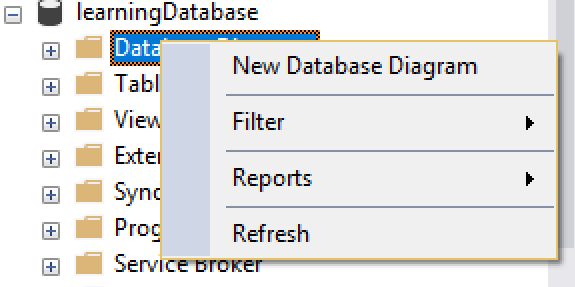
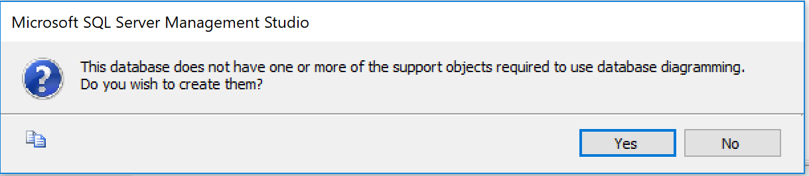
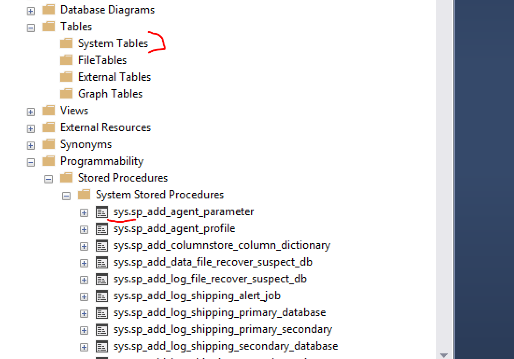
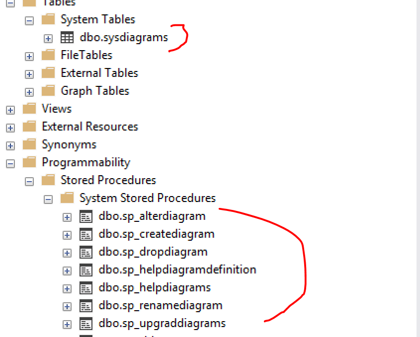
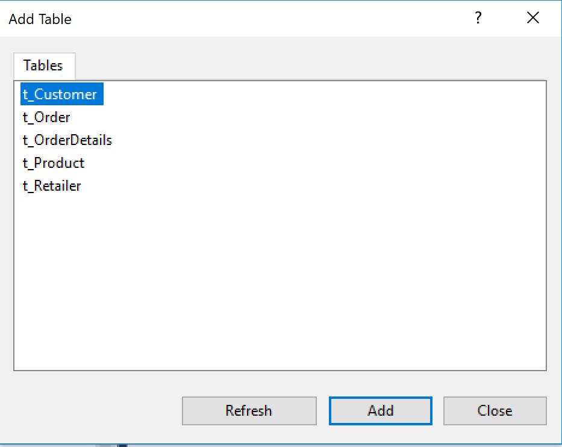
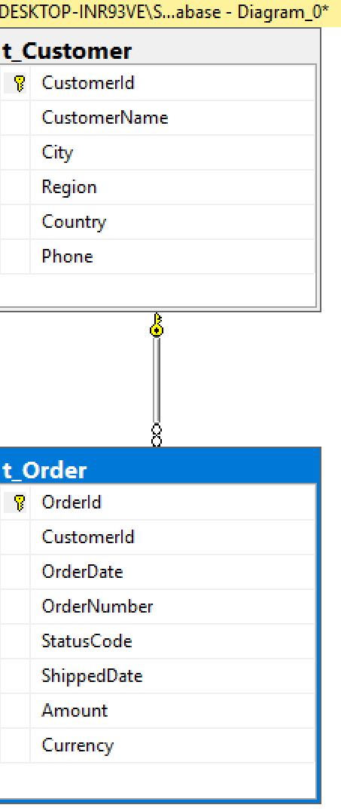
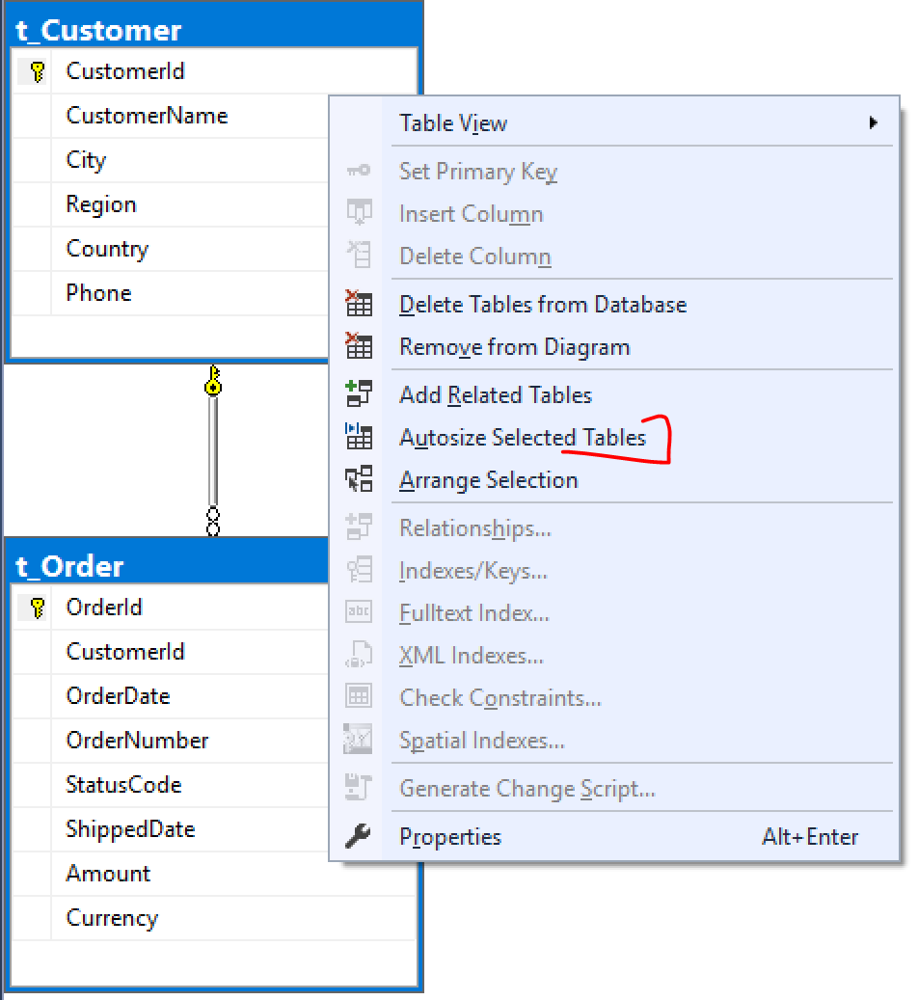
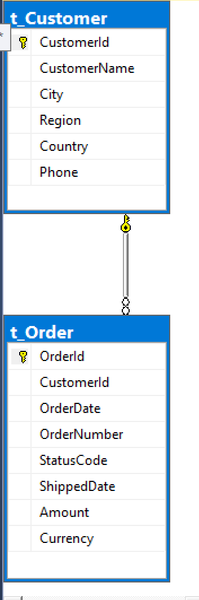

Database Diagrams
Database Diagrams are a way to visualise a database model .When the model is small its quite easy to understand the relationship between the tables, however as the complexity grows and in the real world applications it becomes tough to see the relationship between the tables. Therefore, it is imperative to generate database diagrams as it can graphically show the structure of the database.
With SSMS you can easily create database diagrams.Below are the steps you should follow to create database diagrams
- Login to the Server using steps we saw earlier(Use Windows authentication)
- Expand the server and click on the database you want to generate diagrams for.
- Expand the selected database and click on Database Diagrams
- Rt click on the Database Diagrams and click on “New Diagram” as shown in image

- When you create the diagram for the first time, you may get popup screen asking to create support object required to create db diagrams as shown in the image

- SSMS needs few system procedures and a table that are not created with the database. So just click on OK on the above popup and doing so will create following system procedures in your database.
This happens because,initially if you look into the database system stored procedure (SP), you will only see SP with “sys” and no system tables.Below is the image how it looks before clickin on OK

After you click OK on the error popup shown above(asking to create support objects), you will see one table is created in systables and few sps with dbo schema created as shown in image

- Again click on new database diagram. A new window will open and select all the tables (click “Add” button) you want to generate diagram for as shown in image

- This will create a diagram with the tables columns, primary keys, and relationships that were read from the schema.Assume you selected only 2 tables then it will look like in the image

- You can make it look smaller by selecting all tables using control A and right click and then doing “Autosize selected tables” as shown in below image

After autosizing, tables will look like below

Congratulations... :-) you have restored the database using a backup file